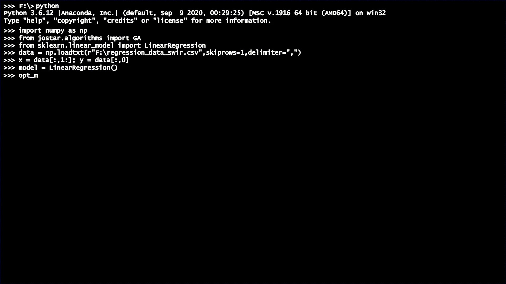
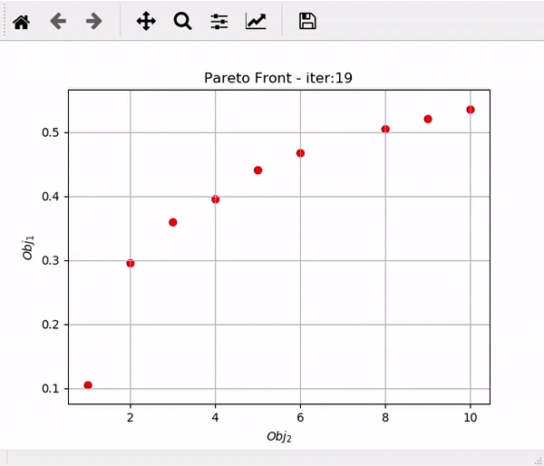

Open-source software
Jostar: Open-Source Feature Selection
Nine feature-selection algorithms for regression and classification, with a familiar Scikit-Learn-style interface.
Overview
Jostar is an open-source Python feature-selection library I developed for regression and classification tasks. It brings together nine selection algorithms, including evolutionary optimization, swarm intelligence, and sequential search, with support for single- and multi-objective approaches. Through a consistent, Scikit-Learn-style interface, users can select informative features, tune algorithm hyperparameters, generate feature rankings, and visualize model performance. Detailed documentation makes the methods accessible for both experimentation and practical workflows. The library supports applications such as identifying informative wavelengths in hyperspectral imagery, helping researchers reduce input dimensionality and investigate which features contribute most to predictive performance.
A closer look
{kind=link}

{kind=link}

{kind=link}